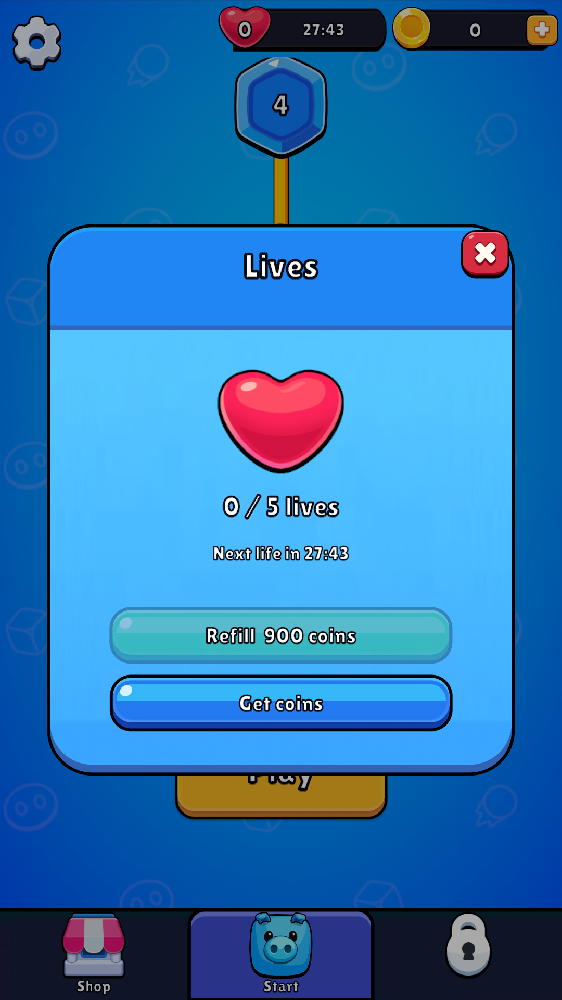
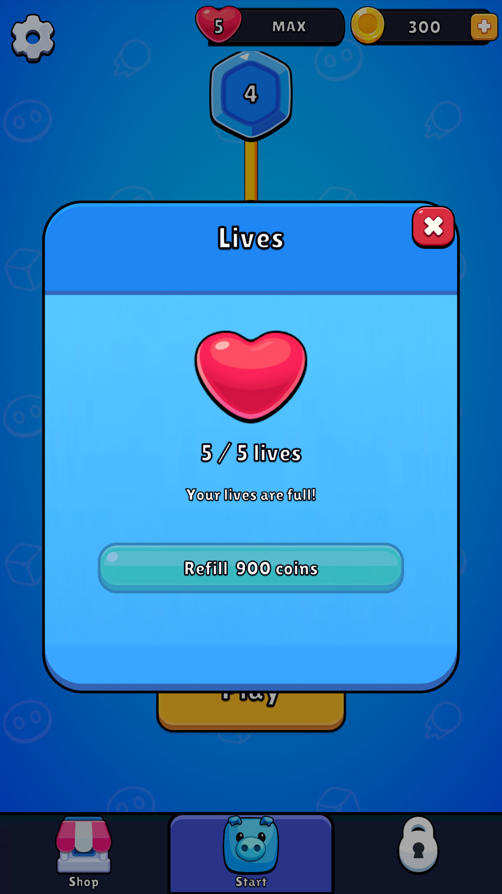
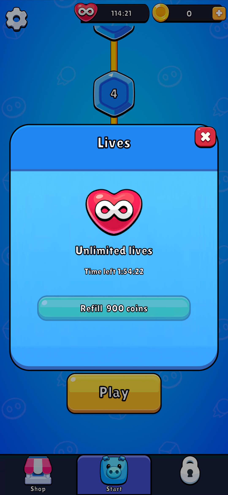
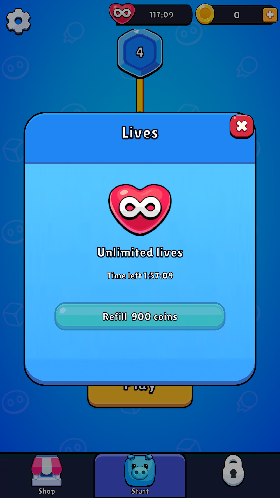

Authored BaseFeaturePanel variant, inherited SafeArea/tween, original source art/font, root DI and the existing ProgressStore. Combined Unity regression138/138 plus strengthened abandonment check1/1. Static validation103 imported files. No player build.
Game View captures below are isolated full/empty/unlimited fixtures. Native refill screenshots/config fields are missing; max5/1800seconds/900coins remain existing estimates. No ads or production-service parity claim.
Details and remaining work ? 138/138 XML ? Receipts ? UI bounds/scaler/SafeArea ? Settings ? Shop



